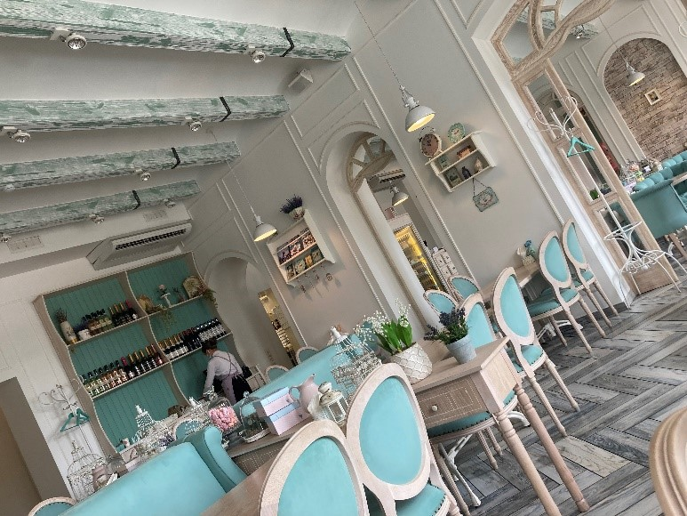
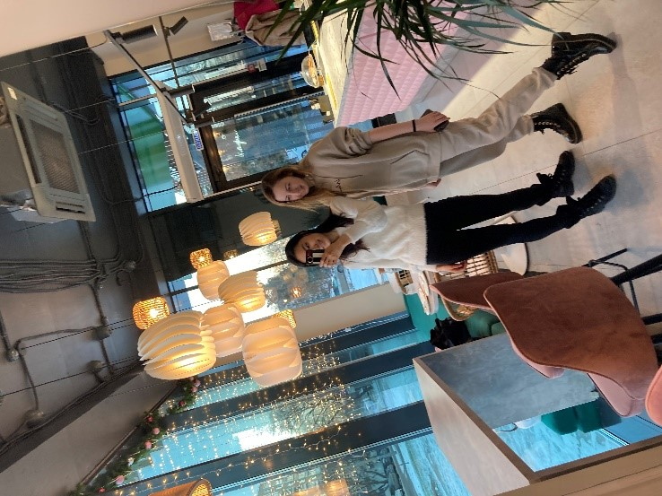

Mai's Blog
かわいいカフェがたくさん
プリヴェット、皆さんこんにちは。いかがお過ごしですか。
今回はロシアのカフェをご紹介します。
素敵なカフェがある街は良い街、というくらい私的にカフェの重要度は高めです。新しい街へ来ての醍醐味は何といってもカフェ巡り。一人で本を読みながらゆったり過ごしたり、お友達と心ゆくまで話したり。食べ物や飲み物ももちろん重要ポイントですが、カフェに流れる音楽や雰囲気に癒されに行っているのが実際のところかもしれません。私にとっては心のリラクゼーションです。
ロシアのカフェ文化はかなり進んでいると思います。モスクワやサンクトペテルブルクのような都会のオシャレなカフェは普通かもしれませんが、私が今住んでいるイジェフスクの街中にもオシャレなカフェが沢山あります。カフェとスーパーマーケット巡りが趣味の私にとっては文句なしです。（笑）。
店内の装飾が本当に可愛くて、椅子や机、置物や鏡、照明などすべてにこだわりがあります。カフェごとに世界観が作り出されています。メニューにもお店ごとにこだわりや特徴があります。ビーガンオプションが豊富にあったり、ミルクの種類を植物性のアーモンドミルクやココナッツミルク、オーツミルクに変更できるところもたくさんあります。食べ物はカーシャやシールニキ、ブリヌイなどロシア料理の軽食の他に、ワッフルやサンドイッチ、オムレツ、パンケーキ、スムージー、サラダラップ、エッグベネディクトなど欧風の軽食があります。とっても可愛いケーキ達がショーケースに並べられていて見ているだけで幸せになります。私は人参ケーキとメド―ヴィク（蜂蜜ケーキ）と呼ばれるロシアのケーキが好きです。
そして、飲み物の種類が豊富です。カプチーノ、ラテの他にラフと呼ばれる飲み物があります。ラフにはチーズ味や、ジンジャークッキー味、レモンタルト味など様々なフレーバーがありとっても美味しいです。最近は抹茶が人気で多くのカフェで抹茶ラテを飲むことが出来ます。
いかがでしたか？ロシアに来られる機会があったらぜひカフェに立ち寄ってみてくださいね。
ウラジオストックのカフェ

シールニキ

イジェフスクのカフェ
ヘルシーケーキのお店
奥がドラーニキ（ジャガイモのお焼き）
手前がシャクシュカ

パンケーキのオランデーソースかけ
ノボシビルスクのカフェ


シールニキ

朝ごはんプレートセット